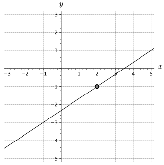
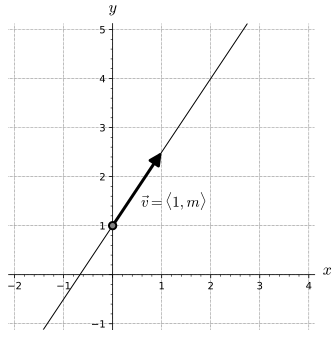

How are lines in \(\R^3\) similar to and different from lines in \(\R^2\text{?}\)
How can vectors make describing lines in \(\R^3\)
How is a plane defined in terms of measurements of points and vectors?
What different ways are there to determine a plane through geometric information?
In single variable calculus, we learn that a differentiable function is locally linear. In other words, if we zoom in on the graph of a differentiable function around a point, the graph will look like the tangent line to the function at that point.
Figure9.5.1.A plot with the ability to zoom in on a point of \(y=f(x)\text{,}\) where \(f\) is a nonlinear, differentiable function
Linear functions (of the form \(f(x)=ax+b\)) play important roles in single variable calculus and are useful in approximating differentiable functions, in approximating roots of functions (Newton’s Method), and approximating solutions to first order differential equations (Euler’s Method). In multivariable calculus, we will study curves in space and we will see that connection between local linearity and differentiability exists for curves in three (or more!) dimensions. Additionally, as we study functions of two variables, we will see that a function is locally linear at a point if the surface defined by the function looks like a plane (the tangent plane) as we zoom in on the graph.
Consequently, it is important for us to understand both lines and planes in space, as these correspond to graphs of linear expressions in \(\R^2\) and \(\R^3\text{.}\) (Recall that a function is linear if it is a polynomial function whose terms all have degree less than or equal to 1. For example, \(x-1\) defines a single variable linear expression and \(x+y+2\) a two variable linear expression. But \(xy\) is not linear since it has degree two, the sum of the degrees of its factors.) We will study planes and lines in \(\R^3\) as flat graphs before we look at curves and surfaces in general. In your study of 1-variable functions, you probably worked with ideas like slope, direction, and measuring change using lines several times before you generalized those ideas for a curve in general. Similarly, we will want to have a good idea about how we talk about direction and measuring change along flat objects in \(\R^3\) (lines and planes) before we start generalizing to curved objects.
Preview Activity9.5.1.
We will start our work on lines by considering some familiar ideas in \(\R^2\) but from a new perspective. You are probably familiar with equations of lines in the \(xy\)-plane in the form \(y = mx+b\text{,}\) where \(m\) is the slope of the line and \((0,b)\) is the \(y\)-intercept. In this activity, we explore a more flexible way of representing lines that is useful in the \(xy\)-plane and higher dimensions. To begin, consider the line through the point \((2,-1)\) with slope \(\frac{2}{3}\) as shown in Figure 9.5.2.

Figure9.5.2.The line through \((2,-1)\) with slope \(\frac{2}{3}\)
(a)
Suppose we increase \(x\) by 1 from the point \((2,-1)\text{.}\) How does the \(y\)-value change? What is the point on the line with \(x\)-coordinate \(3\text{?}\)
(b)
Suppose we decrease \(x\) by 3.25 from the point \((2,-1)\text{.}\) How does the \(y\)-value change? What is the point on the line with \(x\)-coordinate \(-1.25\text{?}\)
(c)
Now, suppose we increase \(x\) by some arbitrary value \(3t\) from the point \((2,-1)\text{.}\) How does the \(y\)-value change? What is the point on the line with \(x\)-coordinate \(2+3t\text{?}\)
(d)
Remember that the horizontal component of a vector describes the “run” and the vertical component measures the “rise” of the vector. So the slope of the line is related to any vector whose \(y\)-component divided by the \(x\)-component is the slope of the line. For the line in this activity, we might use the vector \(\langle 3,2 \rangle\) to describe the direction of the line. Explain why the terminal points of the vectors \(\vr(t)\text{,}\) where
trace out the graph of the line through the point \((2,-1)\) with slope \(\frac{2}{3}\text{.}\)
(e)
Now we extend this vector approach to \(\R^3\) and consider a second example. Let \(\mathcal{L}\) be the line in \(\R^3\) through the point \((1,0,2)\) in the direction of the vector \(\langle 2, -1, 4 \rangle\text{.}\) Find the coordinates of three distinct points on line \(\mathcal{L}\text{.}\) Explain your thinking.
whose terminal points trace out the line \(\mathcal{L}\) that is described in (e). That is, you should be able to locate any point on the line by determining a corresponding value of \(t\text{.}\)
Subsection9.5.1Lines in Space
The way most people draw a line is more connected to the ideas in Preview Activity 9.5.1 than slope or algebraic forms. Take a minute and draw a plot of the line described by \(x+y-1=0\text{.}\) Look at how to hide the next part. You may have done some algebra or other calculation to get to slope intercept form or another familiar algebraic structure, but when you went to draw the line you almost certainly did the following steps
found a point to start your plot (maybe the y-intercept)
found a second point on your plot (perhaps using the slope to find the second point)
drew a line segment from the first point to the second, then extended the line past the second point to the end of you plot
went back to the first point and extended the line in the direction opposite of the second point
In other words, you made a starting point, extended indefinitely far in a particular direction, then added in the opposite direction. This is the essence of the general description for a line we will give below.
In two-dimensional space, a non-vertical line is defined to be the set of points satisfying the equation
\begin{equation*}
y = mx + b,
\end{equation*}
for some constants \(m\) and \(b\text{.}\) The value of \(m\) (the slope) tells us how the dependent variable changes for every one unit increase in the independent variable, while the point \((0,b)\) is the \(y\)-intercept and anchors the line to a location on the \(y\)-axis. Alternatively, we can think of the slope as being related to the vector \(\langle 1, m \rangle\text{,}\) which tells us the direction of the line, as shown on the left in Figure 9.5.5. Thus, we can identify a line in space by fixing a point \(P\) and a direction \(\vv\text{,}\) as shown on the right. Since we also have vectors in space (\(\R^n\)) to provide direction, this same idea of a point and a direction determining a line works in \(\R^n\) for any \(n\text{.}\)

Figure9.5.3.The line through \((0,1)\) with slope \(m\)
Definition9.5.4.
A line in space is the set of terminal points of vectors emanating from a given point \(P\) that are parallel to a fixed vector \(\vv\text{.}\)
The fixed vector \(\vv\) in the definition is called a direction vector for the line. As we saw in Preview Activity 9.5.1, to find an equation for a line through point \(P\) in the direction of vector \(\vv\text{,}\) observe that any vector parallel to \(\vv\) will have the form \(t \vv\) for some scalar \(t\text{.}\) So, any vector emanating from the point \(P\) in a direction parallel to the vector \(\vv\) will be of the form
for some scalar \(t\) (where \(O\) is the origin).
Figure9.5.5.A line in 2-space with vector definition
Figure 9.5.5 shows the plot of a line in two-space in which we can identify the vector \(\overrightarrow{OP}\) (going from the origin to our starting point) and the vector \(t \vv\) as in Equation (9.5.1). Here, \(\overrightarrow{OP}\) is the fixed vector shown in blue, while the direction vector \(\vv\) is the vector parallel to the vector shown in red (that is, the red vector represents \(t \vv\text{,}\) and the line is traced out by the terminal points of the green vector). In other words, the tips (terminal points) of the green vectors (the vectors of the form \(\overrightarrow{OP} + t \vv\)) trace out the line as \(t\) changes.
In particular, the terminal points of the vectors of the form in (9.5.1) define a linear function \(\vr\) in space of the following form, which is valid and gives some geometric intuition into each part for in any dimension.
The vector form of a line.
The vector form of a line through the point \(P\) in the direction of the vector \(\vv\) is
where \(\vr_0\) is the position vector \(\overrightarrow{OP}\) from the origin to the point \(P\text{.}\)
Lines in the \(xy\)-plane are commonly described using the slope-intercept equation \(y=mx + b\text{.}\) The vector form of the line, as described above, is an alternative way to represent lines that has the two advantages. First, in two dimensions, we are able to represent vertical lines, whose slope \(m\) is not defined, using a vertical direction vector. For example, the vertical line described by \(x=2\) could be described in vector form with a direction vector like \(\vv=\langle 0, 1\rangle\text{,}\) giving \(\vr(t)= \langle 2,0\rangle +t \langle 0,1\rangle\text{.}\) The second advantage of the vector form of a line is that this description of lines works in any dimension whereas the concept of slope of a line does not generalize to three or more dimensions.
Figure9.5.6.A line in 2-space with vector definition
Activity9.5.2.
Let \(P_1 = (1,2,-1)\) and \(P_2 = (-2,1,-2)\) and let \(\mathcal{L}\) be the line in \(\R^3\) through \(P_1\) and \(P_2\text{.}\) Note that Figure 9.5.6 shows a similar example of a line in 3D defined by two points.
(a)
Give a direction vector for the line \(\mathcal{L}\text{.}\)
(b)
Give a vector equation of \(\mathcal{L}\) in the form \(\vr(t) = \vr_0 + t\vv\text{.}\)
(c)
Consider the vector equation \(\vs(t) = \langle -5, 0, -3 \rangle + t \langle 6, 2, 2 \rangle.\) What is the direction of the line given by \(\vs(t)\text{?}\) Is this new line parallel to line \(\mathcal{L}\text{?}\)
(d)
Do \(\vr(t)\) and \(\vs(t)\) represent the same line, \(\mathcal{L}\text{?}\) Write a couple of sentences to justify why you think \(\vr(t)\) and \(\vs(t)\) do or do not describe the same set of points.
Subsection9.5.2The Parametric Equations of a Line
The vector form of a line, \(\vr(t) = \vr_0 + t\vv\) in Equation (9.5.2), describes a line as the set of terminal points of the vectors \(\vr(t)\text{.}\) If we view this vector equation in terms components,
These equations describe the coordinates of the points on the line separately where each is coordinate is a function of \(t\text{.}\) The variable \(t\) represents an arbitrary scalar and is called a parameter. In particular, we use the following language.
The parametric equations of a line.
The parametric equations for a line through the point \(P = (x_0, y_0, z_0)\) in the direction of the vector \(\vv = \langle a,b,c \rangle\) are
We should note here that there are many different parametric equations for the same line. For example, choosing another point \(P\) on the line or another direction vector \(\vv\) produces another set of parametric equations. In many physical applications, it is useful to think of \(t\) as a time parameter and the parametric equations as telling us where we are on the line at each time. In this way, the parametric equations describe a particular way to walk along the line; there are, of course, many possible ways to walk along the same line. In mathematical terms, we say that the parameterization of a line is not unique.
Activity9.5.3.
Let \(P_1 = (1,2,-1)\) and \(P_2 = (-2,1,-2)\text{,}\) and let \(\mathcal{L}\) be the line in \(\R^3\) through \(P_1\) and \(P_2\text{,}\) which is the same line as in Activity 9.5.2.
(a)
Find parametric equations of the line \(\mathcal{L}\text{.}\)
(b)
Does the point \((1, 2, 1)\) lie on \(\mathcal{L}\text{?}\) If so, what value of \(t\) results in this point?
(c)
Consider another line, \(\mathcal{K}\text{,}\) whose parametric equations are
What is the direction of the line \(\mathcal{K}\text{?}\)
(d)
Do the lines \(\mathcal{L}\) and \(\mathcal{K}\) intersect? If so, provide the point of intersection and the \(t\) and \(s\) values, respectively, that result in the point. If not, explain why.
Before we move on to our discussion of planes, we will talk about some terminology that may help in describing some features and measurements later. A line is a one-dimensional, flat graph in three (or \(n\)) dimensions. We say the line is a one-dimensional graph because there is only one direction to go and stay on the graph (forward/backward). We say that a line is flat because the direction you are allowed to go doesn’t change as you move along the graph. Note that flat does not mean horizontal. A circle would be another example of a one-dimensional graph that can be drawn in two or more dimensional space (because there is only one direction to move along the circle) but is not flat since the direction you go to stay on the figure changes as you move along the graph. As we will see below, a plane in three dimensional space is an example of a flat, two-dimensional graph. If you were an ant on a plane, you would have two dimensions you can move in while staying on the graph (forward/backward or left/right), but the direction(s) that the graph extends does not change when you move locations on the plane.
Subsection9.5.3Planes in Space
Now that we have a way of describing lines, we would like to develop a means of describing planes in three dimensions. In Section 9.1, we studied the coordinate planes and planes parallel to them. In particular, fundamental planes were of the form \(coordinate = constant\text{,}\) like \(x=1, y=-2, \text{or} z=\sqrt{3}\text{.}\)
Figure9.5.7.A plot of \(x=1\) in red, \(y=-2\) in blue, and \(z=\sqrt{3}\) in green with a normal vector plotted for each fundamental plane
As shown in Figure 9.5.7, any vector in a plane with \(x= \text{constant}\) will be orthogonal to the vector \(\langle 1,0,0 \rangle\text{,}\) any vector in a plane with \(y= \text{constant}\) will be orthogonal to the vector \(\langle 0,1,0 \rangle\text{,}\) and any vector in a plane with \(z= \text{constant}\) will be orthogonal to the vector \(\langle 0,0,1 \rangle\text{.}\) We will use this idea to define a plane in general.
Definition9.5.8.
A plane \(p\) in space is the set of all terminal points of vectors emanating from a given point \(P_0\) perpendicular to a fixed vector \(\vn\text{,}\) as shown in Figure 9.5.9.
Figure9.5.9.A plot of a plane with normal vector \(\vn\) in red and vector on the plane \(\overrightarrow{PQ}\) in orange
Like the definition of a line, the definition of a plane given above uses a starting point and a vector as the critical pieces of information. For a line, you begin at the starting point and move as much as you want parallel to the given vector (the direction vector). For a plane, you begin at the starting point and move as much as you want orthogonal to the given vector (the normal vector). For a line, you move only in the direction of the given vector whereas on a plane you cannot move at all in the direction of the given vector.
The definition allows us to find the equation of a plane. Assume that \(\vn=\langle a,b,c\rangle\text{,}\)\(P = (x_0, y_0, z_0)\text{,}\) and that \(Q=(x,y,z)\) is an arbitrary point on the plane. Since the vector \(\overrightarrow{PQ}\) lies in the plane, it must be perpendicular to \(\vn\text{.}\) This means that
The fixed vector \(\vn\) perpendicular to the plane is frequently called a normal vector to the plane. We may now summarize our new equation for a plane.
Equations of a plane.
The scalar equation of the plane with normal vector \(\vn =\langle a,b,c \rangle\) containing the point \(P = (x_0, y_0,z_0)\) is
\begin{equation*}
ax + by + cz = ax_0+by_0+cz_0.
\end{equation*}
That is, we may write an equation of a plane as \(ax+by+cz = d\) where \(d = \vn\cdot\langle x_0,y_0,z_0\rangle\text{.}\)
Example9.5.10.
If we would like to describe the plane passing through the point \(P=(4,-2,1)\) and perpendicular to the vector \(\vn = \langle 1, 2, 1 \rangle\text{,}\) we have
Notice that the coefficients of \(x\text{,}\)\(y\text{,}\) and \(z\) in this description give a vector perpendicular to the plane.
Figure9.5.11.A plot of a plane with normal vector \(\vn\) in red and vector on the plane \(\overrightarrow{PQ}\) in orange
For instance, if we are presented with the plane
\begin{equation*}
-2x + y - 3z = 4,
\end{equation*}
we know that \(\vn = \langle -2, 1, -3\rangle\) is a vector perpendicular to the plane.
Activity9.5.4.
(a)
Write a scalar equation of the plane \(p_1\) passing through the point \((0, 2, 4)\) and perpendicular to the vector \(\vn=\langle 2, -1, 1\rangle\text{.}\)
(b)
Is the point \((2, 0, 2)\) on the plane \(p_1\text{?}\)
(c)
Write a scalar equation of the plane \(p_2\) that is parallel to \(p_1\) and passing through the point \((3, 0, 4)\text{.}\) (Hint: Compare normal vectors of the planes.)
(d)
Write a parametric description of the line \(l\) passing through the point \((2,0,2)\) and perpendicular to the plane \(p_3\) described by the equation \(x+2y-2z = 7\text{.}\)
(e)
Find the point at which \(l\) intersects the plane \(p_3\text{.}\)
Example9.5.12.
Just as two distinct points in space determine a line, three non-collinear points in space determine a plane. Consider three points \(P_0\text{,}\)\(P_1\text{,}\) and \(P_2\) in space, not all lying on the same line as shown in Figure 9.5.13.
Figure9.5.13.A plane determined by three points \(P_0\text{,}\)\(P_1\text{,}\) and \(P_2\)
Notice that the vectors \(\overrightarrow{P_0P_1}\) and \(\overrightarrow{P_0P_2}\) both lie in the plane \(p\text{.}\) If we form their cross-product
we obtain a normal vector to the plane \(p\text{.}\) Therefore, if \(P\) is any other point on \(p\text{,}\) it then follows that \(\overrightarrow{P_0P}\) will be perpendicular to \(\vn\text{,}\) and we have the equation:
Let \(P_0 = (1,2,-1)\text{,}\)\(P_1 = (1, 0 ,-1)\text{,}\) and \(P_2 = (0,1,3)\) and let \(p\) be the plane containing \(P_0\text{,}\)\(P_1\text{,}\) and \(P_2\text{.}\)
(a)
Determine the components of the vectors \(\overrightarrow{P_0P_1}\) and \(\overrightarrow{P_0P_2}\text{.}\)
(b)
Find a normal vector \(\vn\) to the plane \(p\text{.}\)
(c)
Find a scalar equation of the plane \(p\text{.}\)
(d)
Consider a second plane, \(q\text{,}\) with scalar equation \(-3(x-1) + 4(y+3) + 2(z-5)=0\text{.}\) Find two different points on plane \(q\text{,}\) as well as a vector \(\vm\) that is normal to \(q\text{.}\)
(e)
The angle between two planes is the acute angle between their respective normal vectors. What is the angle between planes \(p\) and \(q\text{?}\)
Subsection9.5.4Summary
While lines in \(\R^3\) do not have a slope, like lines in \(\R^2\) they can be characterized by a point and a direction vector. Indeed, we define a line in space to be the set of terminal points of vectors emanating from a given point that are parallel to a fixed vector.
Vectors play a critical role in representing the equation of a line. In particular, the terminal points of the vector \(\vr(t) = \vr_0 + t\vv\) define a linear function \(\vr\) in space through the terminal point of the vector \(\vr_0\) in the direction of the vector \(\vv\text{,}\) tracing out a line in space.
A plane in space is the set of all terminal points of vectors emanating from a given point perpendicular to a fixed vector.
If \(P_1\text{,}\)\(P_2\text{,}\) and \(P_3\) are non-collinear points in space, the vectors \(\overrightarrow{P_1P_2}\) and and \(\overrightarrow{P_1P_3}\) are vectors in the plane and the vector \(\vn = \overrightarrow{P_1P_2} \times \overrightarrow{P_1P_3}\) is a normal vector to the plane. So any point \(P\) in the plane satisfies the equation \(\overrightarrow{PP_1} \cdot \vn = 0\text{.}\) If we let \(P = (x,y,z)\text{,}\)\(\vn = \langle a,b,c \rangle\) be the normal vector, and \(P_1 = (x_0,y_0,z_0)\text{,}\) we can also represent the plane with the equation
Rewrite the vector equation \(\mathbf{r} (t) =
(3 - 3 t) \mathbf{i} +
(-4 - 2 t) \mathbf{j} +
(2 - 3 t) \mathbf{k}\) as the corresponding parametric equations for the line.
\(x(t) =\)
\(y(t) =\)
\(z(t) =\)
2.
Find the vector and parametric equations for the line through the point P(4, 3, -4) and parallel to the vector \(5\mathbf i - 2\mathbf j + 3\mathbf k\text{.}\)
Vector Form: \(\mathbf r = \langle\), , -4 \(\rangle + t \langle\) , , 3 \(\rangle\)
Parametric form (parameter t, and passing through P when t = 0):
\(x = x(t) =\)
\(y = y(t) =\)
\(z = z(t) =\)
3.
Consider the line which passes through the point P(5, 2, -2), and which is parallel to the line \(x = 1 + 2t, y = 2 + 3t, z = 3 + 6t\)
Find the point of intersection of this new line with each of the coordinate planes:
xy-plane: (,, )
xz-plane: (,, )
yz-plane: (,, )
4.
Find the point at which the line \(\langle -4, -4, 5 \rangle + t \langle -1, -2, 3 \rangle\) intersects the plane \(-4 x+ 4 y - 5 z = -158\text{.}\)
(, , )
5.
Find an equation of a plane containing the three points (-3, 3, -2), (-7, 1, -5), (-7, 2, -3) in which the coefficient of \(x\) is -1.
= 0.
6.
Find an equation for the plane containing the line in the \(xy\)-plane where \(y = 2\text{,}\) and the line in the \(x z\)-plane where \(z = 3\text{.}\)
equation:
7.
Find the angle in radians between the planes \(2 x + z = 1\) and \(5 y + z = 1.\)
8.
The table below gives the number of calories burned per minute for someone roller-blading, as a function of the person’s weight in pounds and speed in miles per hour [from the August 28,1994, issue of Parade Magazine].
calories burned per minute
weight\(\backslash\)speed
8
9
10
11
120
4.2
5.8
7.4
8.9
140
5.1
6.7
8.3
9.9
160
6.1
7.7
9.2
10.8
180
7
8.6
10.2
11.7
200
7.9
9.5
11.1
12.6
(a) Suppose that a 160 lb person and a 200 person both go 10 miles, the first at 9 mph and the second at 8 mph.
How many calories does the 160 lb person burn?
How many calories does the 200 lb person burn?
(b) We might also be interested in the number of calories each person burns per pound of their weight.
How many calories per pound does the 160 lb person burn?
How many calories per pound does the 200 lb person burn?
9.
The vector and parametric forms of a line allow us to easily describe line segments in space.
Let \(P_1 = (1,2,-1)\) and \(P_2 = (-2,1,-2)\text{,}\) and let \(\mathcal{L}\) be the line in \(\R^3\) through \(P_1\) and \(P_2\) as in Activity 9.5.2.
What value of the parameter \(t\) makes \((x(t), y(t), z(t)) = P_1\text{?}\) What value of \(t\) makes \((x(t), y(t), z(t)) = P_2\text{?}\)
What \(t\) values describe the line segment between the points \(P_1\) and \(P_2\text{?}\)
What about the line segment (along the same line) from \((7,4,1)\) to \((-8,-1,-4)\text{?}\)
Now, consider a segment that lies on a different line: parameterize the segment that connects point \(R=(4,-2,7)\) to \(Q=(-11,4,27)\) in such a way that \(t = 0\) corresponds to point \(Q\text{,}\) while \(t = 2\) corresponds to \(R\text{.}\)
10.
This exercise explores key relationships between a pair of lines. Consider the following two lines: one with parametric equations \(x(s) = 4-2s\text{,}\)\(y(s) = -2 + s\text{,}\)\(z(s) = 1 + 3s\text{,}\) and the other being the line through \((-4, 2, 17)\) in the direction \(\vv = \langle -2, 1, 5 \rangle\text{.}\)
Find a direction vector for the first line, which is given in parametric form.
Find parametric equations for the second line, written in terms of the parameter \(t\text{.}\)
Show that the two lines intersect at a single point by finding the values of \(s\) and \(t\) that result in the same point. Then find the point of intersection.
Find the acute angle formed where the two lines intersect, noting that this angle will be given by the acute angle between their respective direction vectors.
Find an equation for the plane that contains both of the lines described in this problem.
11.
This exercise explores key relationships between a pair of planes. Consider the following two planes: one with scalar equation \(4x - 5y + z = -2\text{,}\) and the other which passes through the points \((1,1,1)\text{,}\)\((0,1,-1)\text{,}\) and \((4, 2, -1)\text{.}\)
Find a vector normal to the first plane.
Find a scalar equation for the second plane.
Find the angle between the planes, where the angle between them is defined by the angle between their respective normal vectors.
Find a point that lies on both planes.
Since these two planes do not have parallel normal vectors, the planes must intersect, and thus must intersect in a line. Observe that the line of intersection lies in both planes, and thus the direction vector of the line must be perpendicular to each of the respective normal vectors of the two planes. Find a direction vector for the line of intersection for the two planes.
Determine parametric equations for the line of intersection of the two planes.
12.
In this problem, we explore how we can use what we know about vectors and projections to find the distance from a point to a plane.
Let \(p\) be the plane with equation \(z=-4x+3y+4\text{,}\) and let \(Q = (4,-1,8)\text{.}\)
Show that \(Q\) does not lie in the plane \(p\text{.}\)
Find a normal vector \(\vn\) to the plane \(p\text{.}\)
Find the coordinates of a point \(P\) in \(p\text{.}\)
Find the components of \(\overrightarrow{PQ}\text{.}\) Draw a picture to illustrate the objects found so far.
Explain why \(|\comp_{\vn} \overrightarrow{PQ}|\) gives the distance from the point \(Q\) to the plane \(p\text{.}\) Find this distance.